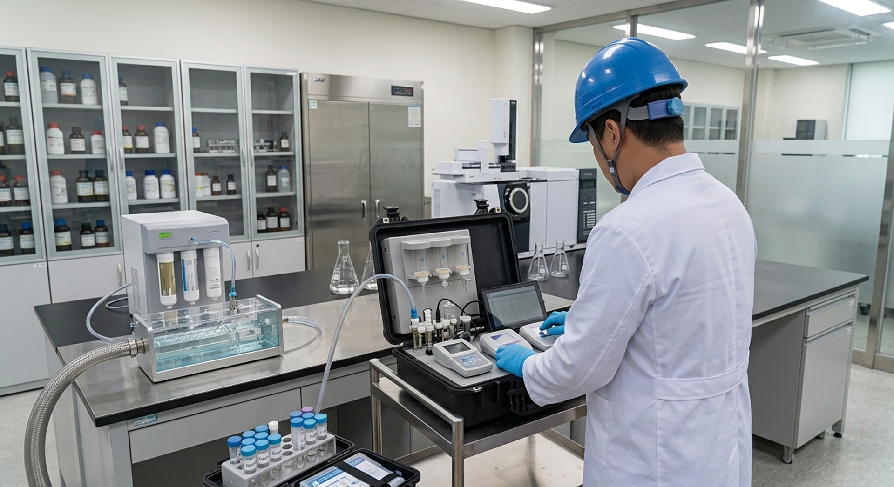
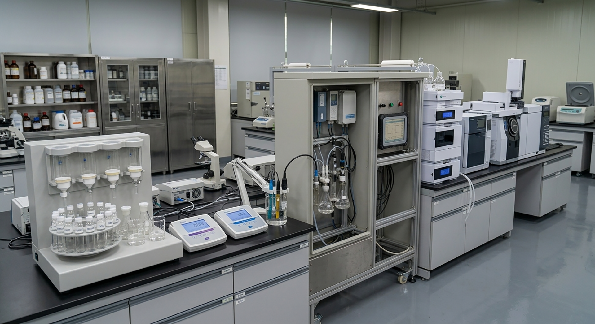
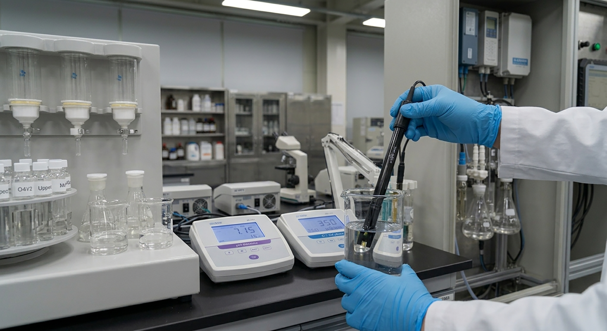
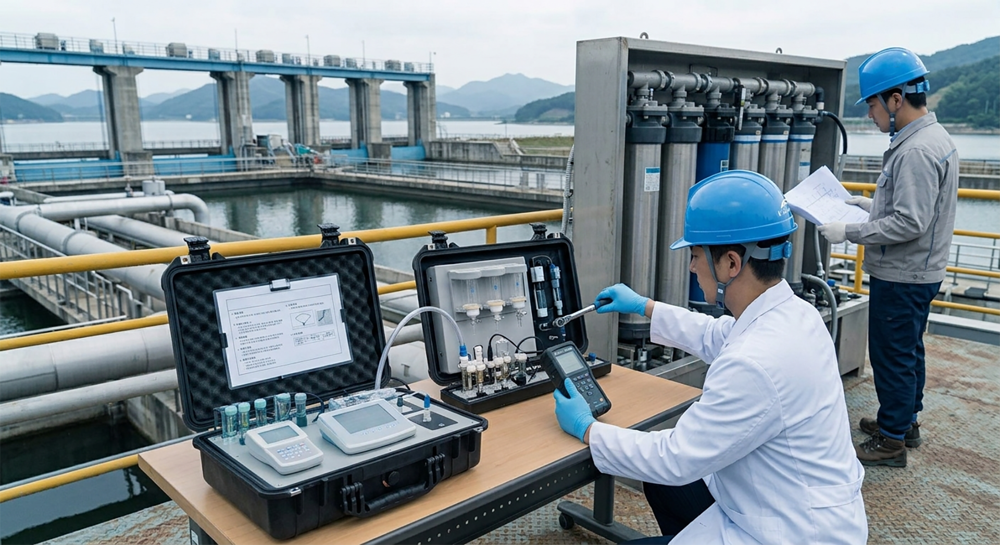
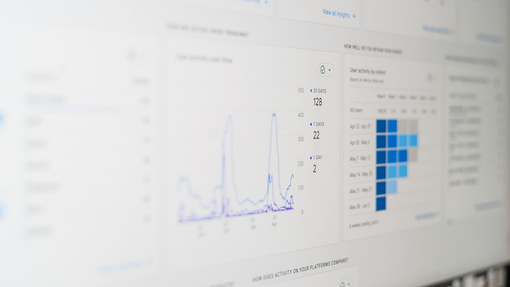

TRUSTED ENVIRONMENTAL MANAGEMENT
정확한 측정을 넘어,
지속적인 관리까지
환경 측정기기의 안정적인 운영과 정확한 측정을 위해
현장에 맞춘
체계적인 유지관리 서비스를 제공합니다.

현장 분석
현장과 시설의 운영 조건을 종합적으로 분석합니다.측정 환경과 처리공정, 관리 목적을 확인하고 현장의 특성과 운영 조건을 고려하여 필요한 측정 항목을 검토합니다.
측정기 선정
현장에 적합한 측정기와 측정 방식을 제안합니다.측정 목적과 설치 환경, 관리 목적에 맞는 측정기를 선정하고 안정적인 운영을 위한 최적의 시스템 구성을 지원합니다.


정확한 수질 측정
필요한 수질 데이터를 정확하게 측정합니다.현장과 공정에 필요한 측정항목을 선정하고 지속적인 측정을 통해 환경 상태를 확인할 수 있는 데이터를 확보합니다.
효율적인 환경관리
축적된 데이터를 바탕으로 높은 운영을 지원합니다.지속적으로 수집된 환경 데이터를 활용하여 시설과 공정의 상태를 파악하고 보다 효율적인 환경관리와 운영 개선을 지원합니다.
안정적인 유지관리
측정기기의 안정적인 운영과 성능 유지를 지원합니다.정기적인 점검과 관리, 소모품 교체 및 기술 지원을 통해 측정기기가 안정적인 상태를 유지할 수 있도록 관리합니다.

실시간 모니터링
수질 변화를 지속적으로 확인하고 관리합니다.측정된 데이터를 기반으로 수질 상태와 변화를 지속적으로 확인하여 공정 및 환경 변화에 신속하게 대응할 수 있도록 지원합니다.

환경 측정에 대한 고민,
우보환경시스템과 함께 해결하세요.
우보환경시스템은 지속적인 기술 개발과 현장 경험을 바탕으로
특허와
인증을 확보하며 환경계측 전문기업으로서의 역량을 강화하고
있습니다.